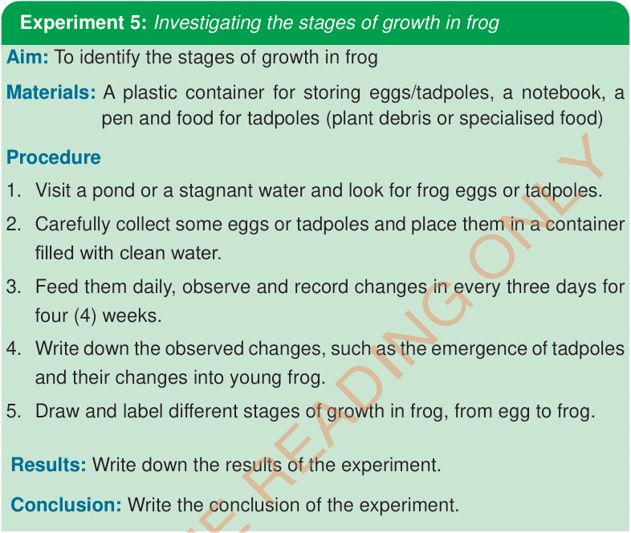

Experiment 5: Investigating the stages of growth in frog

- Aim:
- To identify the stages of growth in frog
- Materials:
- A plastic container for storing eggs/tadpoles, a notebook, a pen and food for tadpoles (plant debris or specialised food)
Procedure
- 1. Visit a pond or a stagnant water and look for frog eggs or tadpoles.
- 2. Carefully collect some eggs or tadpoles and place them in a container filled with clean water.
- 3. Feed them daily, observe and record changes in every three days for four (4) weeks.
- 4. Write down the observed changes, such as the emergence of tadpoles and their changes into young frog.
- 5. By using a specialized application or other application, draw and label/identify the different stages of growth in a frog, from egg to adult frog.
Results: Write down the results of the experiment.
Conclusion: Write the conclusion of the experiment.
Stages of human growth and development
Humans pass through different stages of growth and development, including infancy, childhood, adolescence, adulthood and old age (Elderliness). Each stage has unique changes that contribute to overall growth and development in humans.
Infancy
This is the first stage of growth and development of a human being. Infancy stage covers the range of the period from birth to two (2) years. This is the time after the baby is born and starts early learning. During this period, a baby learns things like touch, movement and emotion. Eventually, the baby is able to hold their head up, sit down, crawl, roll, walk a few steps without support and develops milk teeth. By the time a baby reaches two years of age, they can run and climb up and down without support. Increasing memory and speech